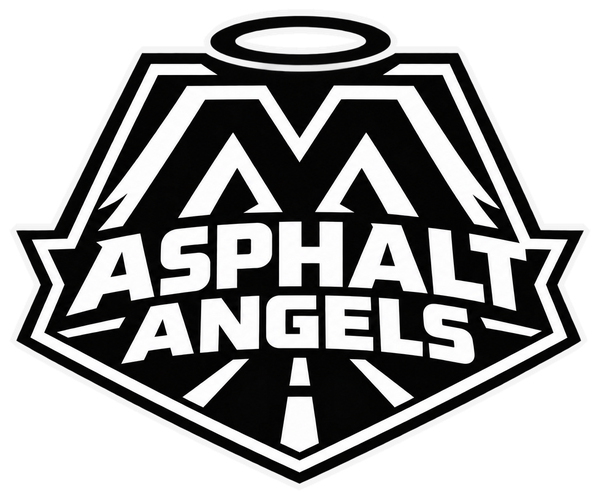
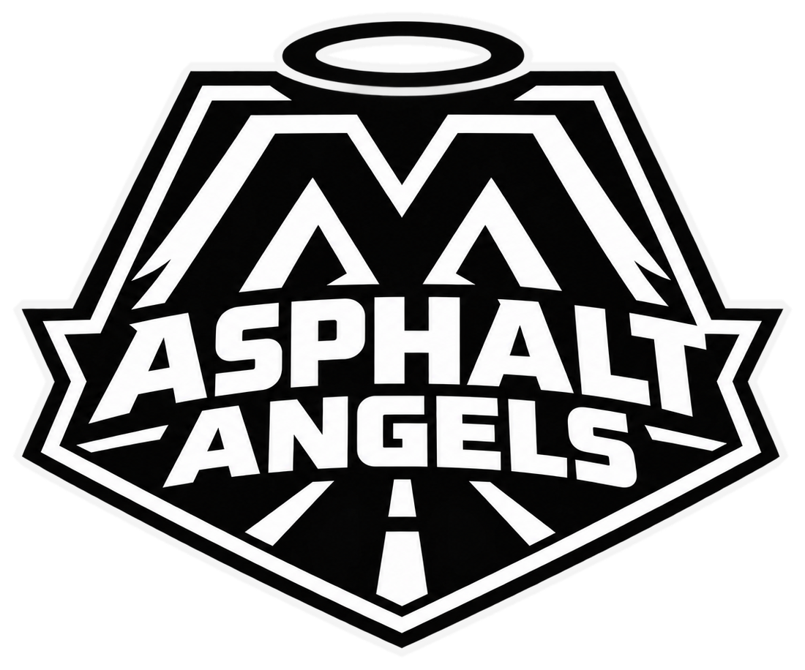

Tell us what you need
Use a private request to describe the help you're seeking. Share only what you're comfortable sharing.

Asphalt AngelsFoundationRiders helping riders
A crash can turn life upside down. Asphalt Angels helps riders and families find a place to start, understand next steps, and connect with trusted partner resources.

What we can do today
We're building a trusted path for riders and families after a crash — and we'll always be straight about what is and isn't available yet.
Use a private request to describe the help you're seeking. Share only what you're comfortable sharing.
With your permission, we can point you to independent partners, which may include personal-injury attorney contacts. You decide whether to reach out. We don't provide legal advice or promise outcomes.
Financial or gear assistance may become possible as funds and supplies grow. It isn't guaranteed today.
Private support request
Tell us the kind of support you're looking for. This isn't for medical, legal, or financial records — just enough for us to respond well.
In an emergency, call 911. Asphalt Angels does not provide emergency response or legal advice.
Help build the network
Riders, families, training partners, safety advocates, and responsible businesses can all help build a stronger safety net.
Connect with us ↗The next chapter
A partner riding school has offered free lessons to veterans recovering from a crash. We're finalizing details now.
Collaborations with experienced riders, veteran-focused groups, and training locations to help riders build skills before they need them.
Partnering with shops and businesses across the motorcycle industry on gear, maintenance know-how, and support.
Classes aren't bookable through this site yet.
Why we started
After more than 27 years riding and working in the motorcycle industry, our founder kept seeing the same gaps: riders without the right gear, maintenance knowledge, or a chance to build skills — and families after a crash asking one urgent question: "What do I do now?"
Asphalt Angels exists to help answer it, and to make the road ahead feel less lonely.
Help make future aid possible
Asphalt Angels Foundation is a 501(c) nonprofit. Your gift helps build rider and family assistance, safety courses, and training partnerships. Direct aid depends on available funds and program readiness.
Secure Stripe checkout launches once our account is confirmed. Donor badges, pins, and hats are on the way. Follow @asphaltangelsca for updates.